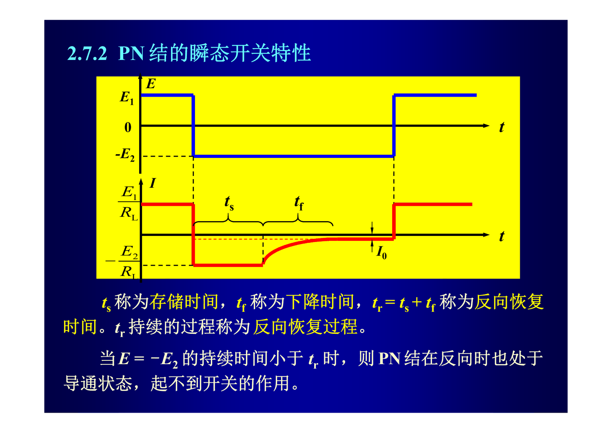
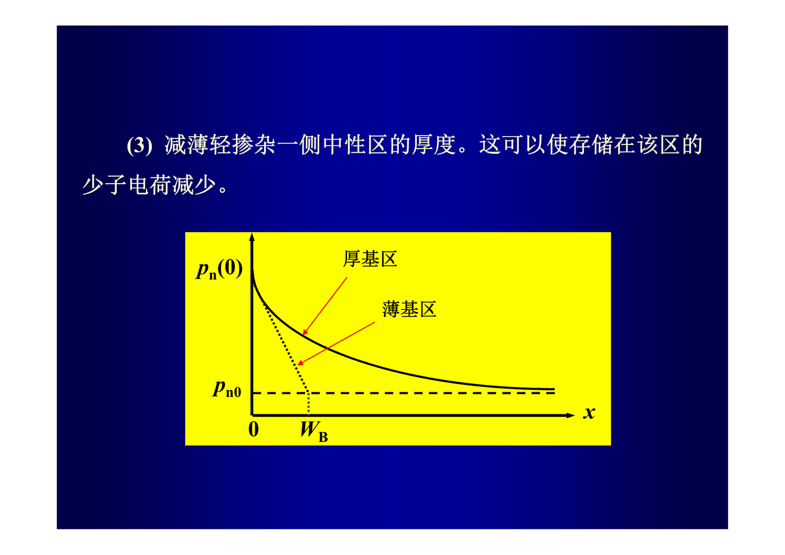

第 2 章 · PN 结
2.15 PN 结的开关特性与少子存储效应
考纲第 15 条。直流开关的非理想因素、反向恢复过程与存储时间/下降时间、电荷控制方程与反向恢复时间计算、减小 tr 的三类措施、中性区存储电荷量。
考纲 2-15）· 简答 + 计算
一句话抓住
理想开关断开时电流立刻消失；实际 PN 结做不到，原因是正向导通期间中性区存储了大量非平衡少子电荷 ，反向时必须先把它抽走 + 复合掉。
1. 直流开关特性#
| 理想情况 | 实际情况 | |
|---|---|---|
| 正向（"开"） | ， | ， |
| 反向（"关"） |
结论型答题点
- 越小、 越大，越接近理想正向特性；
- 越小，越接近理想反向特性；
- 为增大 与 的差别，应采用较大的 。
电路参数
- —— 正向导通时管子两端电压（含正向导通电压 与串联电阻压降）
- —— 寄生串联电阻（非本征元件）
- —— 漏电导（非本征元件，取决于加工质量）
- —— 正向、反向电源电压（决定 、）
- —— 负载电阻
2. 瞬态开关特性与反向恢复波形#
定义题（填空/简答高频）
- 存储时间 ：反向电流由 开始、直到 由 降到 的这段时间，这期间 变化不大；
- 下降时间 ： 由 降到接近于零的这段时间，反向电流由 迅速下降；
- 称为反向恢复时间， 持续的过程称为反向恢复过程。
关键判据： 当 的持续时间小于 时，PN 结在反向时仍处于导通状态，起不到开关作用。

3. 反向恢复过程的物理原因（少子存储效应）#
根本原因是：PN 结在正向导通期间存储在轻掺杂中性区中的非平衡少子电荷 。
以 结为例（把 取为坐标原点）：
| 阶段 | 管压 | 反向电流 | |
|---|---|---|---|
| （刚换向） | （不变） | ||
| 期间 | 由 降到 | （变化不大） | |
| 期间 | 由 降到约 0 |
4. 反向恢复时间 的计算#
4.1 电荷控制方程#
由第 1 章例 1.6 的空穴连续性方程积分形式，得到空穴的电荷控制方程：
为与本节符号一致，把 写成 、 写成 ：
一眼看懂这个方程
存储电荷 的减少有两个途径：一是反向电流 的抽取，二是空穴的复合（由 决定）。这两句话就是本节所有简答题的答案核心。
4.2 求解#
正向稳态时 ，故初始条件 。假设 期间 保持 不变，解微分方程得
令 ：
公式中的每个量
- —— 反向恢复时间（，）
- —— 存储时间、下降时间（）
- —— 空穴少子寿命（，决定复合速度）
- —— 正向电流（，）
- —— 反向抽取电流（，）
- —— 中性区存储的非平衡少子电荷（，初始值 ）
- —— 正向稳态时的存储电荷（，）
- —— 空穴扩散长度、扩散系数（）
5. 减小反向恢复时间的措施（必背三类）#
| 类别 | 措施 | 原理 |
|---|---|---|
| 电路 | 采用尽量小的 | 使存储电荷 小 |
| 电路 | 采用尽量大的 | 加快对 的抽取 |
| 器件 | 降低少子寿命 （掺金、掺铂、中子辐照、电子辐照等引入复合中心） | 既减少正向存储电荷，又加快反向复合 |
| 结构 | 减薄轻掺杂一侧中性区厚度 | 减少存储的少子电荷；且反向抽取时比厚区的电流大得多 |
2025 期中填空题原文
"增加 PN 结二极管的开关速度的几个常用措施为：增大（反向抽取）电流、减小（正向注入）电流、降低（少子寿命）和减薄（轻掺杂区厚度）；一个 PN 结二极管在制备过程中掺入了更多的深能级杂质，则该二极管的开关速度将（增加）。"

6. 中性区存储电荷量#
| 厚 N 区（） | 薄 N 区（） | |
|---|---|---|
| 存储电荷 | ||
| 非平衡少子数目 |
注意： 厚区的 正比于 （与厚度无关，因为分布只延伸到约 ）；薄区的 正比于 （随厚度线性减小）。这就是"减薄 能提速"的定量依据。
7. 易错点#
- 只答"因为有电容"，没说到存储电荷这个根本原因。
- 与 标反： 期间电流变化不大， 期间电流迅速下降。
- 公式漏掉 里的 或者写成 。
- 减少 的措施只答"器件"一类，漏掉电路与结构。
- 薄区存储电荷漏掉系数 。
8. 自测#
自测
- 为什么 PN 结二极管存在反向恢复时间（刚加反向电压时具有很大的反向电流，而不是瞬间达到反向饱和电流）？
- 某 二极管 、、，求 。
- 若开关频率为 1 MHz、占空比 50%，反向恢复时间最多可以是多少？
- 掺金为什么能提高开关速度？对正向特性有什么副作用？
解析要点
- 正向导通期间中性区存储了大量非平衡少子电荷；反向时它们只能靠反向电流抽取与复合两条途径消失，需要时间，因此反向电流先大后小。
- 。
- 周期 ，低电平持续时间 ，要求 。
- 掺金引入深能级复合中心使 减小，存储电荷减少、复合加快；副作用是反向饱和电流 增大（少子寿命降低使产生电流增大），漏电变差。